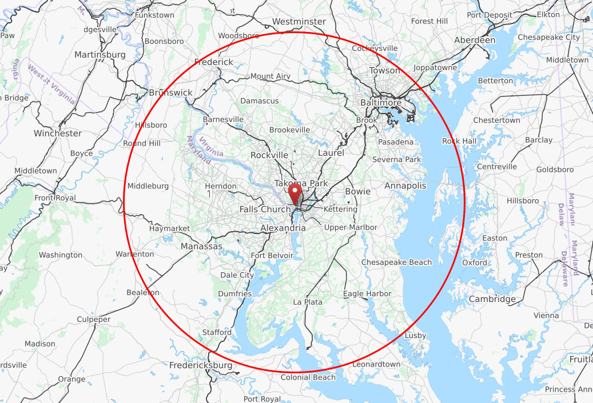

Impact of Radius for Defining "Local"
Radius: 50 miles
Yelp local mean rating: 3.72 Yelp non-local mean rating: 3.82
TripAdvisor local mean rating: 4.03 TripAdvisor non-local mean rating: 4.18
Change Radius
